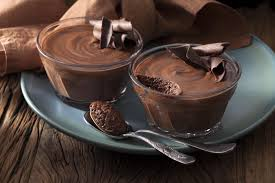

Página Colaborativa de Receitas

Salame de Chocolate
Ingredientes
- 200g chocolate
- 6 ovos
- 10 colheres de açúcar/li>
- 1 colher bem cheia de manteiga
Instruções
- Picar a tablete de chocolate em pedaços pequeninos e colocar numa taça de pirex.
- Levar a derreter em banho-maria o chocolate com a manteiga (num tacho colocar um pouco de água, e levar ao lume para que ferva, colocar a taça pirex em cima do tacho, mas de forma a que a taça não entre em contacto directo com a água. Assim que ferver desligar o lume e ir mexendo o chocolate até derreter completamente).
- Juntar as gemas uma a uma, ao chocolate já derretido, batendo com a batedeira sempre.
- De seguida juntar o açúcar e continuar a bater.
- Bater as claras em castelo e envolver manualmente no preparado anterior.
- Distribuir por tacinhas e levar ao frigorífico umas horas.
Autor: Cláudio Ignat